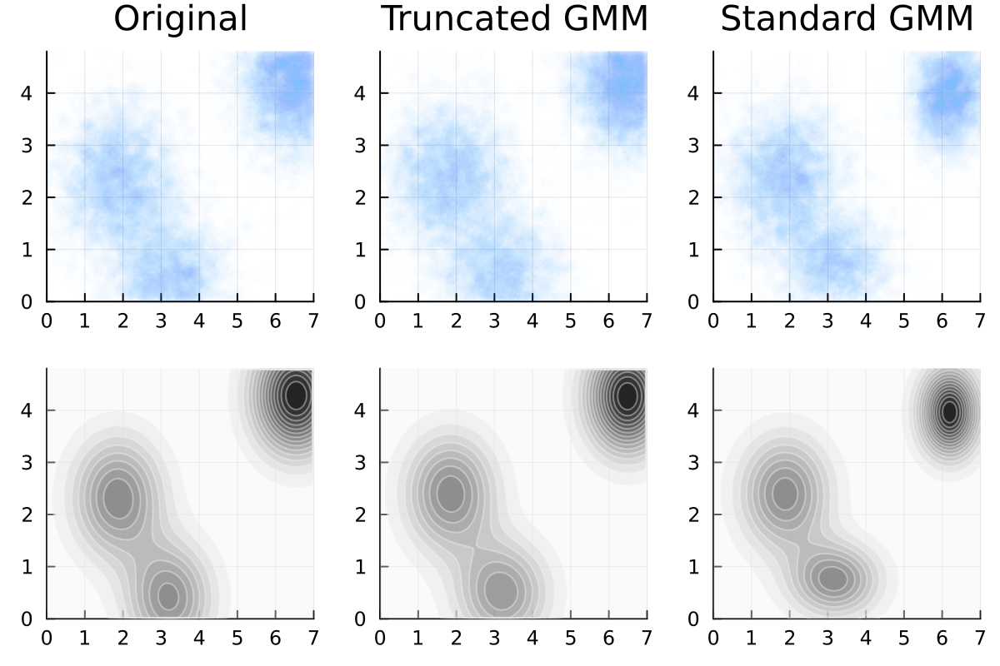
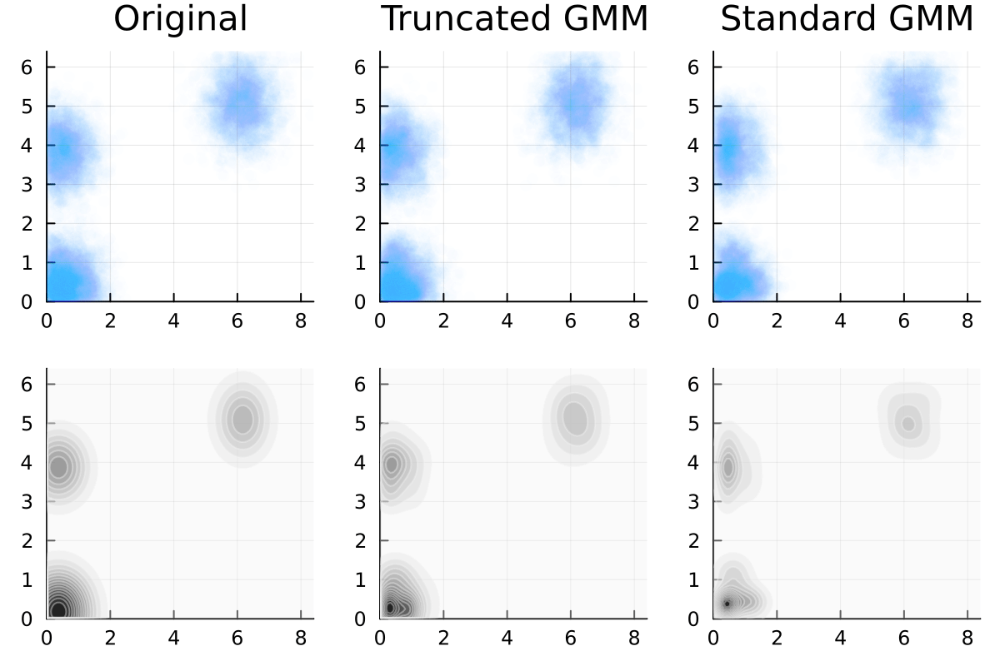

Truncated Gaussian Mixtures
Fit data to mixtures of truncated multivariate gaussians
where \({\bf a}\) and \({\bf b}\) are the bounding corners of the hypercube we would like to truncate the gaussian in. This package supports
Full, Diagonal and Block diagonal covariances for each component
Inteface to allow one to perform the fit in some latent space given by a user-defined transformation, and carry along any target labels
Sampling and pdf evaluation from the resultant fit
Advantages
A standard Gaussian Mixture Model will tend to avoid the edges. A truncated kernel reproduces the probability distributions at the edges as well, as can be seen below.


We implement the Expectation Maximization algorithm as outlined in [LS12] and use the better convergence properties of the Expectation-Conjugate Gradient method (outlined in [SRG03]) in the case that the covariances of the gaussians are diagonal.
Gyemin Lee and Clayton Scott. Em algorithms for multivariate gaussian mixture models with truncated and censored data. Computational Statistics and Data Analysis, 56(9):2816–2829, sep 2012. URL: http://dx.doi.org/10.1016/j.csda.2012.03.003, doi:10.1016/j.csda.2012.03.003.
Ruslan Salakhutdinov, Sam Roweis, and Zoubin Ghahramani. Optimization with em and expectation-conjugate-gradient. In Proceedings of the Twentieth International Conference on International Conference on Machine Learning, ICML'03, 672–679. AAAI Press, 2003.
Quick Start
You can install this library using
pip install truncatedgaussianmixtures
You can then import truncatedgaussianmixtures. At the first import it may take a while, since this will create a local julia installation. This will only happen once at the first ever import.
The main function to use is fit_gmm. The following is a simple example use case.
import pandas as pd
from truncatedgaussianmixtures import fit_gmm
# Generate some data
df = pd.DataFrame(np.random.randn(80_000, 2), columns=["x", "y"])
# Truncated it to the unit square
cond = (df['x'] < 1) & (df['x'] > 0)
cond &= (df['y'] < 1) & (df['y'] > 0)
df = df[cond]
# Fit it a truncated gaussian mixture model to it
gmm = fit_gmm(data = df, # data to fit to
N = 1, # Number of components of the mixture model
a = [0,0], # lower corner of the truncation
b = [1,1], # upper corner of the truncation
cov = "diag" # covariance structure: any of ("diag", "full")
)
# Sample from the gmm
df_fit = gmm.sample(len(df));
# Evaluate it at different points
gmm.pdf(np.array([0,0]))